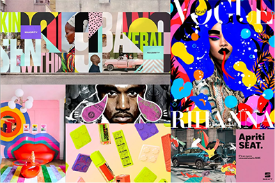
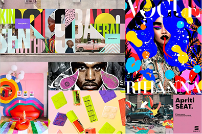

LAS TENDENCIAS QUE MARCARÁN EL DISEÑO GRÁFICO DE CARTELES ESTE 2024
Isabel Ayala GonzálezPara aquellos apasionados por el diseño de carteles, abordaremos algunas de las tendencias que los expertos han previsto que marcarán este 2024; tendencias que no deberías perder de vista para que puedas mejorar tu creatividad al momento de diseñar carteles, así como otros productos gráficos.


 
